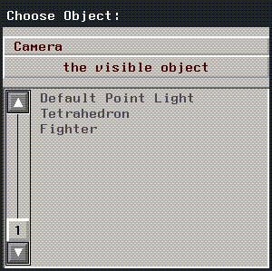
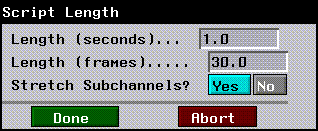
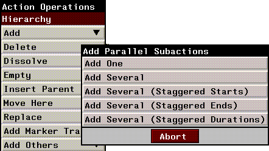
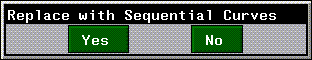
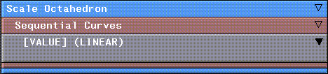

[N-World Contents] [Book Contents] [Prev] [Next] [Index]
Using the Script Editor
In this chapter you'll learn how to use the Script Editor to create, modify, and organize your scripts. You'll also learn how to build hierarchical scripts, and how to work with operations and curves.

What is a Script?
A script is a series of instructions. It says what should be done, and in what sequence. While you could create an animation manually, loading in background images, posing characters, moving characters, and rendering frames by hand, it's easier to set up a script to do the work for you.
The instructions in a script can execute operations in different modules in N·World. For example, you could load and manipulate images in N-Paint, animate skeletons created in N-Geometry, and render each frame by calling N-Render.
Channels, Operations, and Curves
A script is divided up into units called channels. Channels are arranged hierarchically, and are executed from top to bottom for each frame in the script.
A channel may contain either an operation or a dynamic value.
Script Hierarchy
Scripts are arranged hierarchically; that is, you can create channels that contain other channels, so that several channels can be grouped together logically. This is useful if you want to turn off a portion of a script or skip over part of a script using some of N-Dynamics' basic functions (as described in the N-Dynamics Tutorial).
A channel can contain one or more other channels; in such a case, the containing channel is called the parent channel, and the contained channels are called its children. Contained channels are also called subchannels or subactions.
Figure 3.1 Channels in a script
Building a Basic Script
Building scripts is an iterative process; you build a basic version of the script, animate it, then 'll adjust and animate again until the script does exactly what you want it to do.
To show this process, let's build a simple script, one that rotates a tetrahedron around its own axis.
1. In N-Geometry, (CLICK-L) on File>New Object>Tetrahedron.
2. In N-Dynamics, (CLICK-L) on the File>Create New Script.
- Call it "rotate_object".
Figure 3.2 Specifying a script name
3. (CLICK-L) on Do It.
4. Drag the slider to specify three channels for the new script:
Figure 3.3 Specifying the number of channels
Figure 3.4 Script with three parallel subactions
- The script now contains three subactions-each of the blue blocks represents a different instruction.
5. Move the mouse over the first Make Visible channel (the one at the top of the script) and (CLICK-M).
- The Edit Action Properties dialog box is displayed, as shown in Figure 3.5:
Figure 3.5 Edit Action Properties dialog box
- We decided early on that we wanted to rotate the tetrahedron, so let's assign the proper operation to this channel.
6. (CLICK-L) on the text box next to Operation.
- The operation class menu appears:
Figure 3.6 Operation class menu
- Operations are divided into modules (which roughly correspond to modules in N·World); modules are further divided into operation classes. For example, the Geometry module contains the Camera operation class. When we specify an operation, we'll use notation that reads like "(CLICK-L) on the Geometry>Camera operation."
- Each operation class has a number of operations associated with it, which you can look at by clicking on the operation class. All operations are described in detail later in this manual except for those in the Skeletal Animation operation class, which are described in the Skeletal Animation System Reference Manual.
7. (CLICK-L) on Geometry>Rotation.
- The menu of "rotation" type operations is displayed:
Figure 3.7 Rotation operation class
8. (CLICK-L) on X Rotate.
- The Edit Action Properties dialog box changes, depending on the parameters N-Dynamics needs to perform the operation. For a rotation around the X axis, N-Dynamics wants you to specify the following information:
Figure 3.8 X Rotate parameters
- To rotate an object, you must specify what object is to be specified (Object), whether the rotation should take place around the object's local axis (Local?) or the global center, and how much it should be rotated (Angle).
9. (CLICK-L) on the text box next to Object.
- A list of the objects loaded into N-Geometry is currently displayed:

Figure 3.9 Choosing an object
10. (CLICK-L) on the object you want to animate.
- In this case, choose the Tetrahedron.
11. Choose the frame of reference for the rotation.
- In this case, let's rotate the object around its local X axis, so make sure Yes is selected. We'll specify how much we want to rotate the tetrahedron in one of the steps below.
12. (CLICK-L) on Do It in the Edit Action Properties dialog box.
- You'll see that the first channel in the script now looks different:
Figure 3.10 X Rotate action (with curve channel)
- The grey box, which has an inverted triangle in the upper right corner, is a curve channel. The label for the channel says [ANGLE], which tells you what the curve is controlling, and [LINEAR], which describes the type of curve used for the operation.
13. (CLICK-L) on the gray area of the curve channel.
- This opens up the curve channel so that you can look at how it regulates the operation:
Figure 3.11 Viewing curve data
14. (CLICK-M) on the curve channel to edit the curve.
- The Edit Curve Properties dialog box appears:
Figure 3.12 The Edit Curve Properties dialog box
- This dialog box lets you select the type of curve you want to use to animate the object (Curve Type). You set the start and end value for the curve (Start Value and End Value) here, and have the option of changing the minimum and maximum values that can be displayed in the channel (Min Plot Value and Max Plot Value).
15. Set Start and End values of 0.0 to 360.0 respectively, then (CLICK-L) on Do It.
- The curve now looks like this:
Figure 3.13 Modified curve
- As the script executes from left to right, the angle at which the cube is rotated increases from 0 (its starting position) to 360 (its ending position).
16. (CLICK-L) on the Animate button in the Script Editor.
- N-Dynamics brings the N-Geometry window to the front, and animates the rotation of the tetrahedron around its own X axis. The animation process generates a one-bit recording which you can playback (as described in the section "Animate," on page 2-29 and "Playback," on page 2-32).
17. (CLICK-L) on Playback.
- For playback, N-Dynamics brings the Nichimen Playback window to the front, and plays back the black-and-white recording in real time.
18. (CLICK-L) on File>Save Script.
- To save your script and the referenced objects, make sure Yes is selected for each element you want to save under the Save column:
Figure 3.14 Saving a script and its objects
You've now created a basic script which can be retrieved or modified and updated at a later time.
Modifying a Script
Now that you've looked at the recording of your script, you might decide you want to add some more operations. Suppose for example, that you want to rotate the cube around its Z axis too. How do you do that?
19. (CLICK-M) on the second channel in the script "rotate-object."
20. (CLICK-L) on Geometry>Rotation>Z Rotate.
Figure 3.15 Z Rotate parameters
- Choose the tetrahedron and make it rotate around its local axis.
21. (CLICK-L) on Do It.
- The name of the second channel changes to Z Rotate Tetrahedron.
22. Edit the curve channel, as you did for the [ANGLE] value above.
- This time, specify start and end value of 0 and 45.
23. Animate the script again.
- The tetrahedron now rotates in two directions; around its local X axis, and around its local Z axis.
Parallel vs. Sequential Subactions
In the script "rotate_object" we rotated an object around two axes at the same time. What if you want to do one action, then another, and make sure that the two are tied together so that one always starts when the other ends?
Sequential subactions are good for animating an action that you want to recur several times over the duration of the script. You might, for example, create several sequential subactions, each of which contains a walk cycle. By adding several sequential subactions, you could copy the cycle to each subaction and have the character in your animation walk over its entire length.
Sequential subactions are also good if you have several operations that you want to take place one right after another. Since the sequential subactions share a cue, dragging the cue left or right does not affect the sequence; it may stretch the channels, but the shared cue ensures that when the first action ends, the second begins.
Channel Order
As mentioned earlier, the order in which channels are arranged in your script is almost always significant.
Some operations, like Render or Save Canvas to File typically appear at the bottom of the script; you want to render a scene after you've moved all the objects, or save the paint canvas after you've done all the paint operations you're going to do to a scene.
The Update Skeleton operation, for example, should appear below other operations that animate the skeleton.
Notes on individual operations, and any special placement considerations for those operations, are included in "Dynamic Operations," on page 5-1.
Rotation Order
Channel order is also significant in simpler operations, such as rotations-while the object ends up in the same position, the "path" it takes to get there can be quite different. Let's see how, using our script "rotate_object."
1. Make sure the script "rotate_object" is loaded into the action editor.
- There should be three channels in the script: X Rotate Tetrahedron, Z Rotate Tetrahedron, and a third, Make Visible channel.
2. In N-Geometry, (CLICK-L) on objects on the element sensitvity menu, then (SHIFT-L) on the tetrahedron.
3. (CLICK-L) on Home
- This clears the transformation matrix of the tetrahedron, returning it to its home position.
4. In N-Geometry, (CLICK-L) on points on the element sensitvity menu, then (SHIFT-L) on the vertex at the top of the tetrahedron.
5. (CLICK-L) on Move.
- Move the vertex at the top of the tetrahedron out and slightly to one side:
Figure 3.16 Original and modified tetrahedron
- The effect of changing rotation order is easier to see on asymmetrical objects. Because you are changing the shape of the object, and not its name, you don't need to update your script.
6. Animate the script.
7. (CLICK-R) on Playback.

Figure 3.17 Rotating the tetrahedron X before Z, frame 15 of 30
8. (CLICK-L) on Save Current Recording (to Memory).
- Name this recording "XbeforeZ".
9. (CLICK-R) on the title bar.
- The Script Operations menu appears:
Figure 3.18 The Script operations menu
- These operations let you manipulate the script hierarchy (adding channels, moving channels), modify time parameters for the script, open or close channels, and other miscellaneous tasks. All the commands on this menu are described in more detail in the section "The Script Operations & Action Operations Menus," on page 3-37.
10. (CLICK-L) on Reorder.
- The Reorder Channels menu appears, displaying a list of all channels in the script:
Figure 3.19 Reorder subchannels
- To reorder the channels in a script, (CLICK-L) and hold down the mouse on the channel you want to move-the text turns red. Then, drag the channel up or down to its new position.
11. Move the Z Rotate Tetrahedron to the top of the script.
- As you drag the channel either up or down, the other channels "shuffle" to accommodate the moved channel.
12. (CLICK-L) on Do It.
- The script editor updates itself automatically to reflect the new order you've specified.
Figure 3.20 Reordered channels
13. (CLICK-L) on Animate.
- Did you see the difference? Because the order in which objects are rotated is significant, moving one channel in front of the other has a visible effect on your script.
14. (CLICK-R) on Playback.
15. (CLICK-L) on Save Current Recording (to Memory).
- Name this recording "ZbeforeX".
Figure 3.21 Rotating the tetrahedron Z before X, frame 15 of 30
16. (CLICK-R) on Playback, then (CLICK-L) on Play any Recording.
- First, play the recording XbeforeZ, then play ZbeforeX. Seeing the two close together makes it easier to see the difference.
17. Save your script using the File button.
Unused Channels in Scripts
If you've followed the examples in this chapter so far, the bottom channel in your script "rotate_object" is unused. A channel is unused if it doesn't make reference to an object. You may want to have several unused channels in your script as you're building it, but it's a good idea for clarity's sake to remove any unused channels before saving the final version of the script.
Activating and Deactivating Channels
If you want to temporarily turn off channels in a script, but don't want to necessarily delete it from your script, you can deactivate that channel. If the script is animated, the animation is calculated as if the channel weren't there.
Try this exercise to see how deactivating a channel works:
1. Make sure the script "rotate_object" is loaded.
2. Move the cursor over the channel Z Rotate Tetrahedron.
3. (CLICK-R) on the channel.
- The Action Operations menu appears:

Figure 3.22 The Action Operations menu
All the commands on this menu are described in more detail in the section "The Script Operations & Action Operations Menus," on page 3-37.
4. (CLICK-L) on Deactivate.
- In the script editor, the text in the deactivated channel turns black. (This command changes to Activate this Action if you (CLICK-R) on a deactivated channel.)
5. Animate the script.
- The X rotation is animated, but not the Z rotation.
Turning channels on or off is a powerful way of debugging scripts. You can turn channels on or off, reanimate, and repeat the process until you locate the source of any problems you might be having. There is no limit to the number of channels that can be active or inactive in a script.
- Note. You can also use the hot key "a" to activate or deactivate a channel. Move the cursor over the channel and press the "a" key on the keyboard.
Basic Channel Operations
There are a number of channel operations you'll perform over and over when working with scripts, whether the channel is an action or a curve.
Opening a Channel
"Opening" a channel means displaying any subchannels that it might contain in the script editor. For example, if a channel contains an action, you can open it to see the type of curve used by that channel (if it uses a dynamic value).
To open a channel:
1. Make sure the script is open.
- The channel contains lower level channels if there is a box in the upper left corner.
2. (CLICK-L) anywhere on the channel.
- If the black triangle is solid, it indicates that the channel contains subchannels.
- Dynamic operations and parent channels have a black rectangle in the upper right corner. (If you (CLICK-R) on this box, the channel "zooms" to fill the entire Script Editor.
Figure 3.23 Top, a closed channel; middle, opened channel, right opened curve
Closing a Channel
To close a channel, (CLICK-L) on it.
If you (CLICK-L) on a close box for a parent channel, N-Dynamics remembers the state of any children channels. If, for example, you close an action, but don't close its curve, the next time you open the action, the curve will still be open.
Closing Multiple Levels
As you add more hierarchical complexity to your scripts, you may wish to quickly determine "how deep" you are down the hierarchy. If you are zoomed in on a channel, the color-coded boxes on the title bar indicate your relative depth (from the top level) in the script.
To go up to a higher level:
1. While in the lower level channel, move the cursor over the title bar.
- Note that there are several boxes on its left end:
Figure 3.24 Script depth; the current channel is four levels deep
Copying a Channel
If you create a channel that contains several subchannels, then find that you want to create the same channel (and set of subchannels) again, you can copy the channel.
To copy the contents of one channel to another:
1. (CLICK-R) on the channel you want to copy.
2. (CLICK-L) on Remember.
3. (CLICK-R) on the channel you want to copy the remembered channel into.
4. (CLICK-R) on Move Here.
- Note. You can also use the hot keys for remembering an element (".") and pasting it ("c").
Deleting a Channel
Deleting a channel removes it and any subchannels it contains from the script.
To delete a channel:
1. Move the cursor over the channel you want to delete.
2. (CLICK-R) on the channel, then (CLICK-L) on Delete.
- To remove a channel but none of its subchannels (effectively raising the subchannels in the script hierarchy), see the section "Dissolve," on page 3-41.
- Note. The hot key combination (SHIFT-D) deletes an element (either a channel or a cue).
Cutting a Channel
This operation is available on sequential subactions only. Cutting a sequential subaction creates additional subactions in the same channel (the equivalent, basically, of having specified a larger number of sequential subactions when originally creating them). To cut a sequential subaction:
1. Move the cursor over the channel you want to cut.
2. (CLICK-L) on Cut this Action to cut the channel in half.
Resizing a Channel
To change the length of a channel:
1. Move the mouse over the beginning or end of the channel.
- When the mouse is over the cue, a white box appears around the cue.
2. (CLICK-L) and drag the cue left or right.
- If the channel you're resizing is a curve, any data is stretched or shrunk proportionately as well.
- The positions of any cues in the curve channel are also affected by resizing the channel, unless those cues are frozen. See the section "Set Freeze," on page 3-56 to learn how to freeze cues.
Editing Properties of a Channel
To edit the properties of either a curve or an operation:
1. Move the mouse over the channel.
2. (CLICK-M) on the channel.
Cues
There are cues in every channel; by definition, every channel has a cue at its beginning and end; curve channels sometimes have additional cues in between. They occur at a specified given time within the script and (optionally) contain some value.
A cue might represent some numeric value in a curve (for an action like X Rotate), a camera view (for an action like Set Camera View) or a skeletal pose (for an action like Animate Pose to Pose).
Figure 3.25 Cues in a data channel
Every channel has a cue at its beginning and end (so they can be resized).
Sequential subactions (by definition) share a common cue:
Figure 3.26 Cues in sequential subactions
If you move a cue shared by two sequential subactions, both actions are affected.
Editing a Cue
You can perform operations on cues (using the Cue Operations menu) or change the value for the cue (using the Cue Parameters menu).
To edit a cue:
Move the mouse cursor over a cue, then use the appropriate mouse button for the type of operation you want to perform:
The Adjust Parameter Value Menu
The Adjust Parameter Value lets you set the value for a cue; however, because a cue can represent a number of different things (such as a value, a pose, a camera view, or a color) the parameters you can set in the menu change depending on the type of action the data channel is associated with.
Editing Cues that Represent Simple Values
If the cue represents a simple value, you can (CLICK-M) on the cue to set a new value. A curve channel created for an X Rotate operation, for example, represents a simple value-an angle-that can be modified over the length of the script.
Figure 3.27 The Cue Operations for a cue in a curve data channel
Editing Cues that Represent Complex Values
Other cues, however, represent complex values; a cue used to mark a skeletal pose, for example, indicates that all the bones on the selected skeleton should be rotated and lengthened to a named state at a certain time in the script. Including separate curve channels for all x, y, and z rotation, and length for every bone would be impractical, so the pose is represented by a single cue. However, because that cue represents multiple values, editing its value in the curve editor wouldn't make sense.
If you (CLICK-M) on a cue that represents a complex value, such as a skeletal pose, you're prompted to select which pose should occur at that point in time:
Figure 3.28 The Cue Operations menu for an Animate Pose to Pose action
Similarly, a Camera View is a complex value; it contains an x, y, and z location for the camera, as well as rotations along each axis. Again, the complex value is represented by a single cue. If you (CLICK-M) on a cue to select a camera view, you're prompted to select either the current view in the N-Geometry window or a saved view:
Figure 3.29 The Cue Operations menu for a Set Camera View action
Cue properties may still be assigned to a cue that represents a complex value; for example, you may want to specify a type of curve treatment for a cue (such as a slow-in) when animating toward a skeletal pose. See the section "Edit Properties," on page 3-31 for more about cue properties.
Remember, the cue type can vary depending on the type of action the cue is associated with; the menu displays all the information you'll need to update the cue appropriately.
The Cue Operations Menu
While the Edit Cue Parameters menu lets you change the value for a cue, the Cue Operations menu lets you perform more "physical" operations on a cue (such as setting its position numerically, copying its value, or deleting the cue).
To display the menu of cue operations, (CLICK-R) on a cue:
Figure 3.30 The Cue Operations menu
Each item on the Cue Operations menu is described below:
Delete
Removes the cue from the channel.
Detach from Marker
If the cue is currently linked to a marker, this command "detaches" the cue.
Edit Value
This is identical to using (CLICK-M) on a cue. Choosing this command displays the menu described in "The Adjust Parameter Value Menu," on page 3-24.
Edit Concurrent Cues
This is identical to using (CLICK-R) on a marker. Choosing this command displays the menu described in "Edit Concurrent Cues," on page 3-50.
Freeze/Unfreeze
If you want a cue to be permanently frozen in time, (you want the value, pose, or view associated with that curve to happen a set number of seconds into the animation) you can freeze the cue. Once a cue is frozen, it will not move, regardless of any stretching or shrinking you might perform on the channel:
Figure 3.31 Frozen cue
- Note. You cannot freeze a cue linked to a marker.
Link to Marker
Links the selected cue to a marker on the marker track. Moving the marker affects the position of any cue tied to the marker.
Try the following mini-tutorial to see how the could be used:
1. Open an action that contains several parallel curves.
2. Add a marker track to the action's channel.
- (CLICK-R) on the action and choose Add Marker Track from the Action Operations menu.
3. (CTRL-L) on the marker track to turn on color coding of markers and associated cues.
- Color coding is on if a colored box appears around markers on the marker track.
4. (SHIFT-L) on the marker track to add a new marker.
- This adds a marker without adding any additional cues.
5. (CLICK-R) on the new marker and choose Remember this Marker.
6. (CLICK-R) on a cue and choose Link to Remembered Marker.
- You may want to repeat this step several times with different cues
7. Slide the marker to the left and right.
- The associated cues move in relation to the position of the new marker. Linking multiple cues to a marker is useful if you want to move several cues at once.
- A cue does not have to be directly lined up with a marker to be tied to it; any cue in the channel can be associated with a marker.

Figure 3.32 Move several cues at once by linking them to a marker
- Note. There are hot keys for remembering a marker (".") and linking a cue to the remembered marker ("L").
- Note. You can (CTRL-L) on a marker track to display linked markers in a color coded mode. Each marker is assigned a color, and any cues linked to that marker appear in the same color in the Script Editor.
You may also want to refer to the section "Move, Scale and Rotate [Linked]," on page 5-56 for more on linking cues to markers.
Remember
Remembers both the time and value associated with the selected cue. You can copy the save value or saved time to another cue using the Use Remembered Value or Use Remembered Time commands, described below.
Set Time
Specify the time (in either seconds or frames) at which this cue should fall.
Use Remembered Value
Copies the value remembered with the last Remember command to the currently selected cue.
Figure 3.33 Copying values from one cue to another
Remembered values can be copied between channels.
- Note. There are hot keys for remembering a cue (".") and pasting its value ("c").
Use Remembered Time
Moves the selected cue to the position of the cue remembered with the last Remember operation:
Figure 3.34 The Edit Cue Properties menu
Cue times can be copied between any two cues.
- Note. There are hot keys for remembering a cue (".") and pasting its time ("w") (for "when").
Edit Properties
Displays the appropriate Edit Cue Values menu. Editing a cue in a conic spline curve for a simply Y Rotate action, for example, displays the following menu:
Figure 3.35 The Edit Cue Properties menu
You can specify a new angle of rotation, as well as new bias, continuity, and tension values for the cue.
Time
Time runs from left to right in the script editor; frame 1 at the left side, up to the final frame in the script at the right. The time line indicates:
Changing the Length of a Script
To change the overall length (number of frames) in a script:
1. (CLICK-R) on the script length box.
Figure 3.36 Script length box
2. (CLICK-L) on Change Script Length.
- The following menu appears:

Figure 3.37 Changing the length of a script
3. Enter a new length for the script, using seconds or frames.
4. Specify whether subchannels should be stretched to the new script length.
- When you change the length of a script, you need to specify how subchannels should be treated:
The Time Line and Animation Line
The time line and animation lines run across the bottom of the script editor, as shown in Figure 2.1:
Figure 3.38 The frame range area (including the time line)
The first and last frame of the currently visible portion of the script are shown in the frame range area.
Viewing Part of a Script-Setting the Time Line
The red line across the bottom of the script window determines how much of the script is visible in the script editor window at any one time.
Figure 3.39 The red line indicates the currently visible portion of the script
The beginning and ending frame number for the visible area of the script are also updated when you manipulate the time line.
Animating Part of a Script-Setting the Animation Line
The thin white line that runs across the time line is the animation line. It marks the part of the script that will be animated using the Animate button at the bottom of the script editor. To modify the animation line, (CLICK-L) on the frame range box next to the Playback button at the bottom of the script editor. The following menu is displayed:
Figure 3.40 Frame operations
1. (CLICK-L) on Change Active Frames.
- The following dalog box is displayed:
Figure 3.41 Specifying frames to be animated
2. Enter the range of frames that you want to animate.
- In the example above, we specified frames 10 through 30. The white Animation Line is updated in the frame range area of the Script Editor:
Figure 3.42 Frame operations
The Script Operations & Action Operations Menus
The Script Operations menu lets you work with the entire script; changes you make using this menu affect the whole script or all channels in the script, rather than a single channel. (The script itself can be considered a high-level parent channel, since it contains all other subchannels in the script.)
For that reason, you may notice that this menu is very similar to the Action Operations menu; this section describes the menus on both commands, since there is a good deal of overlap between the two.
To display these menus, (CLICK-R) on either the title bar (for the Script Operations menu) or a channel (for the Action Operations menu). After each command, a line indicating what type of channel the command can be performed on is included (script, any channel, action, curve, etc.).
The Curve Operations menu is described in more detail in Chapter , "Working with Curves."
Figure 3.43 Left, Script Operations menu; right, Action Operations menu
Hierarchy
The hierarchy commands let you add, move, or reorder channels in a script. They are tools to let you organize your work.
Add
Scripts, actions
Lets you add parallel subactions to a channel or script. (CLICK-L) on Add to display a menu of options for adding the channels:

Figure 3.44 Adding parallel subactions
Parallel subactions are typically used to control simultaneous, independent motion of several different types. For example, an object that spins while crossing the screen requires at least two parallel subactions: one to specify horizontal motion for crossing the screen, and another to specify rotation to give the object its spin.
You can add a single action in parallel with the existing subaction(s) or you can add several subactions. When adding several subactions, you have the following options:
By default, actions with staggered start and/or end times are placed evenly within the parent channel.
- Note. The hot key ("s") can be used to insert parallel subactions to either the script or an action.
Add One
Adds a single subaction at the bottom of the script. The script matches the length of the script.
Figure 3.45 Adding a single subaction
Add Several
Add any number of full length subactions to the bottom of the script. You specify the number of subactions you want to add using a slider.

Figure 3.46 Adding several subactions
Add Several (Staggered Starts)
Adds any number of subactions, with staggered starts. The first added subaction is the same length as the script; each subsequent channel is progressively shorter.
Figure 3.47 Adding subactions with staggered starts
Add Several (Staggered Ends)
Adds any number of subactions, with staggered ends. The first added subaction is the shortest; each below it is progressively longer until the final added channel, which is the length of the script.
Figure 3.48 Adding subactions with staggered ends
Add Several (Staggered Durations)
Adds any number of subactions, each of the same length, equally spaced over the length of the script.

Figure 3.49 Adding subactions with staggered ends
Delete
Any channel
Deletes the selected channel and any subchannels.
Dissolve
Channels with subchannels only
Deletes the selected action, but does not affect any subchannels of that action. You could use this to delete an action but leave its associated curve channel.
Empty
Scripts, channels
Insert Parent
Any channel
Inserts a parent channel above the selected channel. Inserting parent channels above an existing channel lets you group operations together into larger "chunks" that can be moved, turned on or off, or deleted altogether. The original "child" channel is moved down accordingly in the script hierarchy.
To insert a parent channel around an existing channel:
1. Move the mouse over the channel you want to Insert a Parent above.
2. (CLICK-R) on the channel.
Figure 3.50 Original channel...
3. (CLICK-L) on Insert Parent.
- The new parent channel appears around the selected channel:
Figure 3.51 ...and with parent channel inserted (given the name Parent Channel)
You might, for example, move all translation actions inside a parent channel and name it "translations" or move all your render actions inside a single render parent channel. You could then turn off all operations in the selected channel simply by deactivating the parent channel.
Move Here
Scripts, any channel
Copies the channel or script last remembered (with the Remember command) into the channel under the cursor. To move a channel:
1. Move the mouse over the channel you want to move.
2. (CLICK-R) on the channel.
- Let's assume that in the script below, we wanted to move channel 2 inside of channel 1:
Figure 3.52 Before the move
3. (CLICK-L) on Remember.
4. Move the mouse over the channel you want to copy the channel into.
5. (CLICK-R) on the channel.
6. (CLICK-L) on Move Here.
- The following dialog box is displayed:
Figure 3.53 Confirming a channel move
7. (CLICK-L) on Yes.
- The channel is inserted into the target channel.
Figure 3.54 After moving channel 2 inside of channel 1
Replace
The Replace commands let you replace a channel with some remembered element...a copy of another channel, a curve channel, or a variable.
Figure 3.55 Replace commands
Replace with Copy
Any action
Replaces the channel under the mouse with the action last remembered using the Remember command.
Replace with Curve
Any action
Replaces the channel under the mouse with a curve channel. Any subchannels under the selected action are deleted.
Replace with Variable
Any channel
Variables can be used with the N-Dynamic Basic Functions operation class (discussed in the section "Basic Functions," on page 5-9). The use of variables is described in more detail in the N-Dynamics Tutorial.
Typically, you'll use this command to replace a curve channel under an operation with a variable defined by another channel, so that dynamics of the two actions are tied.
To replace an action with a variable:
1. (CLICK-M) on the channel that will return the variable being used, and enter the variable name to the Channel Variable field.
- If you're using the value from another curve, make sure to assign the variable to the curve channel, and not its parent.
Figure 3.56 Specifying a variable name
- For this example, we assigned the curve channel for the Scale Octahedron channel a variable name of "var-name".
2. Move the mouse over the channel you want to replace with a variable.
- Suppose that in the script shown in Figure 3.57 we wanted to replace the curve channel for the Y Rotate Octahedron operation with the same dynamic value used for the Scale Octahedron operation, so that the scaling and rotating were linked:

Figure 3.57 Before using Replace with Variable
3. (CLICK-R) on the channel.
4. (CLICK-L) on Replace with Variable.
- Enter the variable you want to use in the dialog box that appears:
Figure 3.58 Specifying a variable name
- The channel operation is changed to Get Variable Value, using the variable value specified in the dialog box above:
Figure 3.59 After replacing a channel with a variable
Replace with Sequential Curves
Any curve channel
Inserts a parent channel (named Sequential Curves) around the selected curve channel (of type Return Value). Sequential curves must be contained in a parent channel.
1. (CLICK-R) on a curve to display the following menu:
Figure 3.60 Replacing a curve with sequential curves
2. (CLICK-L) on Replace with Sequential Curves.
- The following prompt appears:

Figure 3.61 Confirming replacement of curve with sequential curves
3. (CLICK-L) on Yes to create the proper structure for sequential curves.
- A parent channel is inserted around the selected curve. The channel has a type of Return Value, which returns the value for the curves contained in the channel.

Figure 3.62 Proper script structure to support sequential curves
Add Marker Track
Scripts, actions
A marker track is a special kind of channel that runs along the bottom of the selected channel or script. Marker tracks let you tie several cues in different channels to a single marker-moving the marker moves all the cues simultaneously.
You might, for example, want to add a marker track to a script that both rotates and scales an object. If you added a marker track to the script, you could insert cues in both channels that were linked to the same marker, effectively tying a given rotation and scaling action together in time.
- Note. Linked cues need not be directly over the marker to which they are tied.
- Note. Cues can be attached to only one marker at a time.
To add a marker track:
1. (CLICK-R) on the script or channel.
- A narrow channel appears at the bottom of the selected channel, with a small triangle at the beginning and end of the channel.
Figure 3.63 Adding a marker track
- For an example of how to use markers, see the section "Link to Marker," on page 3-27. Marker tracks are also described in the N-Dynamics Tutorial.
Adding a Marker with Cues
This is useful if you want to add cues to a channel or channels, then tie them to the marker:
1. Move the mouse over the marker track.
2. (CLICK-L) on the track.
- Cues are added to all curve channels inside the channel (even if they are at a lower point in the hierarchy.
Figure 3.64 Adding a marker and linked cues
Adding a Marker without Cues
This is useful if you already have several cues that you want to link together:
1. Move the mouse over the marker track.
2. (SHIFT-L) on the track.
- A marker is added to the track, but no new cues are created. See the section "Link to Marker," on page 3-27 to see how to link existing cues to a marker.
Figure 3.65 Adding a marker and linked cues
Moving a Marker
To move a marker (and its linked cues):
1. Move the mouse over the selected marker.
2. (CLICK-L) and drag the mouse left or right.
- Note that any cues tied to the marker move at the same time.
Marker Operations
To display a list of operations that can be performed on a marker, (CLICK-R) on a marker. The following menu is displayed:
Figure 3.66 Marker operations
Delete this Marker
Marker
To delete a marker:
1. Move the mouse over the selected marker.
2. (CLICK-R) on the marker.
- From the menu that appears, select Delete this Marker.
Edit Concurrent Cues
Marker
This operation lets you edit the value of all cues that occur at the same time as this marker. If you choose this option, associated cues are highlighted, and sliders appear in any channels for which concurrent cues exist:
Figure 3.67 Editing concurrent cues
To change the value for any
Remember this Marker
Marker
N-Dynamics remembers both the time and value in the selected marker.
Use Remembered Time
Marker
You must have used the Remember command to use this command on a marker. After remembering the time associated with a marker, use this command to copy the time to cues in similar channels.
Use Remembered Values
Marker
You must have used the Remember command to use this command on a marker. After remembering the values associated with a marker, use this command to copy the values to cues in similar channels.
Add Others
The operations in this class add other types of elements to a script, as described below.
Add Others>Sequential Actions
Script, actions
Motions defined in sequential subactions follow one another; they are executed from left to right. The cues between sequential subactions are shared so that one ends at exactly the same time another begins. This means that the cue's parameter value is the same at the end of one sequence as it is at the beginning of the next. (Although the cues between the new subsequences can be moved as required.)
Add Others>Parallel Curves
Scripts, actions
Adds a parallel channel, containing a curve, at the bottom of the selected script or action.
Add Others>Derived Curve
Scripts, actions
Derived curves are created based on values found in other curves within the channel. Suppose, for example, that you want to create a curve by multiplying the values in two other curves; that third curve is a derived curve.
To see an example of a derived curve:
1. Create a sample script.
2. Add a channel of type Dynamics>Basic Functions>Multiply.
- The Multiply channel opens with two curve channels.
3. Edit the first curve channel so that it starts at 0 and ends at 1.
4. Edit the second curve channel so that it starts at 1 and ends at 0.
- The script editor should look something like this:
Figure 3.68 Adding a derived curve
5. (CLICK-R) on the multiply channel.
6. (CLICK-L) on Add Others>Derived Curve.
- A derived curve appears below the other two curves, within the multiply channel:
Figure 3.69 The derived curve is added below the other curve channels
7. (CLICK-R) on the derived curve channel, then (CLICK-L) on Recompute Derived Curve.
8. Open the derived curve channel.
- It should look something like this:
Figure 3.70 The resulting derived curve
- The derived curve can now be copied to other curve channels, or inserted into another parent channel.
Note that derived curves can be generated by a number of Basic Function operations (such as add, divide, multiply, subtract) and others; if you modify the value in any of the curve channels from which the value in the derived curve is generated, you must use the Recompute Derived Curve command to update its shape.
Note also that you can modify the channels used to generate the derived curve, then choose Recompute Derived Curve again. If you delete any of the channels used to generate a derived curve, it can no longer be generated; for that reason, you may want to deactivate a curve (using the Curve Operations menu) rather than delete it altogether.
Add Others>Imported Curve
Scripts, actions
Loads previously saved curve data into the selected channel.
Figure 3.71 Adding an imported curve
A sample curve data file might like this:
Description: X-Rotation Y-Rotation Z-Rotation
1.0,1.1,1.2
1.2,1.3,1.4
1.4,1.5,1.6
1.6,1.7,1.8
Add Others>Sequential Curves
Scripts, actions
Adds one or more sequential curves inside of a channel.
Cut
Sequential subactions
Cuts the selected subaction half, making two smaller subactions. This command is useful for adding subactions to the same level in the script.
Time
The commands in this section of the menu let you manipulate parts of the script (and the script itself) with relationship to time.
Slide
Actions, curves
Sliding an action moves the entire channel left or right.
Extend Curves
Scripts, actions
Extend each curve in the selected channel so that it matches the length of the parent channel. The curve is extended by adding another cue at the end of the channel with the same value as the previous end cue:
Figure 3.72 Top, original curve; bottom, after extending
If you choose this operation for a script, all curves in all channels are extended; if you use it on a single channel, only the curves in the selected channel are extended.
When you choose this command, the following menu is displayed:
Figure 3.73 Extending curves
Set Freeze
Scripts, actions, curves
Freezes or unfreezes the cues. Resizing channels or adjusting the script length has no effect on the position of frozen cues.
When you freeze cues, they are highlighted in a light blue color; unfrozen cues are black.
Figure 3.74 Freezing or unfreezing cues in an action or script
You can freeze or unfreeze the cues in only the selected channel or for all subchannels in the selected channel as well.
- Note. The hot keys "f" and "F" can be used to freeze and unfreeze cues respectively.
Set Timeline
Scripts, actions
Changes the timeline to fit the amount of time contained in the current channel. To set the timeline:
1. Move the cursor over the channel to set the timeline from.
2. (CLICK-R) on the channel.
- The timeline is adjusted so that only the portion of the script defined by the selected channel is displayed in the script editor. This command is useful if you only want to see the portion of the script that takes place while the selected channel is active.
To return to viewing your entire script, (CLICK-R) on the title bar and select this command again.
- Note. The hot key "T" can be used to fit
the timeline to the selected channel.
Other Script Operations
The last section of the Script Operations menu contains operations that aren't necessarily associated with the hierarchy, time, or display of a script.
Activate/Deactivate
Scripts
Activate/Deactivate this Action toggles the status of the selected channel. You can tell whether a channel is active or inactive by looking at the color of the text in the channel:
See the section "Activating and Deactivating Channels," on page 3-17 for more about making channels active or inactive.
Remember
Scripts, actions
When copying an action from one channel to another, you need to "remember" it. This command copies the action into memory. See the section "Move Here," on page 3-42.
Recompute Derived Curve
Actions containing derived curves, curves
Forces the selected derived curve to be recomputed. You can choose this command by clicking on either the channel containing the derived curve, or directly on the derived curve.
For more information on how to use derived curves, see the section "Add Others>Derived Curve," on page 3-52.
Set All Operations
Scripts, actions
Assigns an action to all the subactions of the selected action. This is useful, for example, if you have created several subactions (either parallel or sequential) that you want to do the same thing.
To assign an operation:
1. Move the cursor over the action whose subactions you want to set.
2. (CLICK-R) on the channel.
3. (CLICK-L) on Set Subaction Operations.
- The Select Operation Class menu appears. Choose the operation class, then the operation you want to assign to any subchannels.
If any of the subactions being replaced have subactions inside of them, you are also prompted to specify whether or not subchannels should be replaced with the specified action.
Untrace All
Scripts, actions
As described on page 5-4, you can trace the current value of a given channel, watching its progress in the LISP listener window.
This command turns off all tracing for either the selected action or script.
[N-World Contents] [Book Contents] [Prev] [Next] [Index]
 Another fine product from Nichimen documentation!
Another fine product from Nichimen documentation!
Copyright © 1996, Nichimen Graphics Corporation. All rights
reserved.